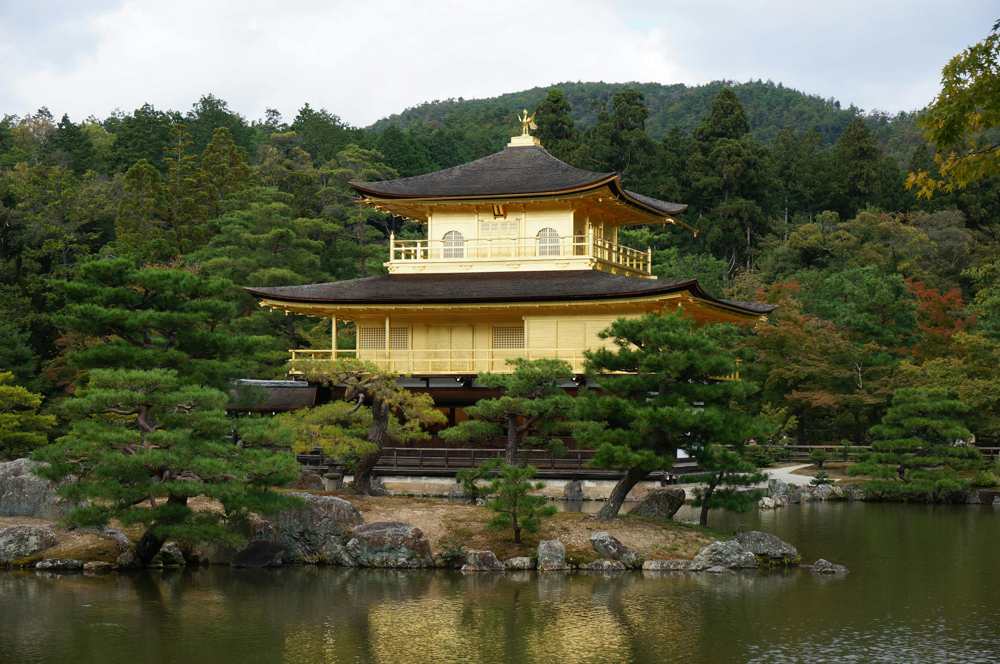
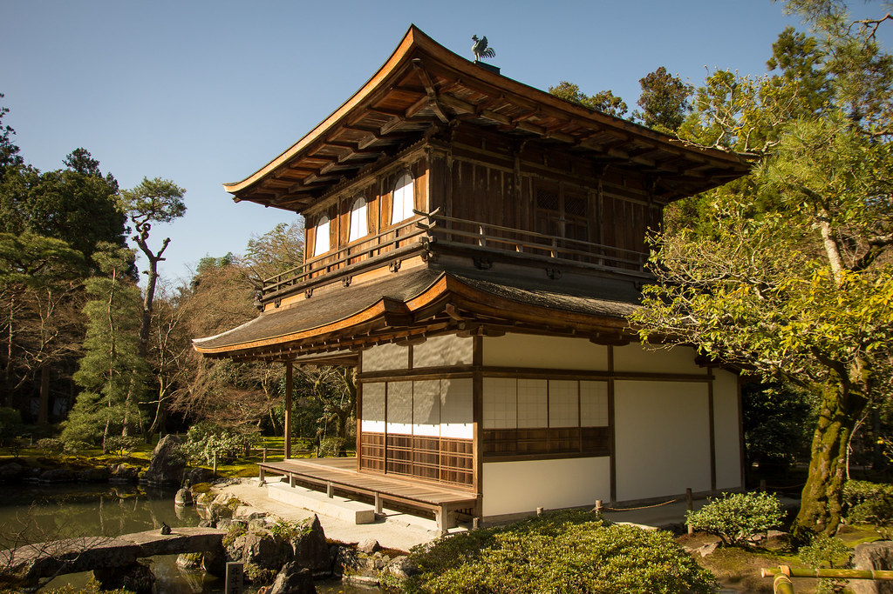
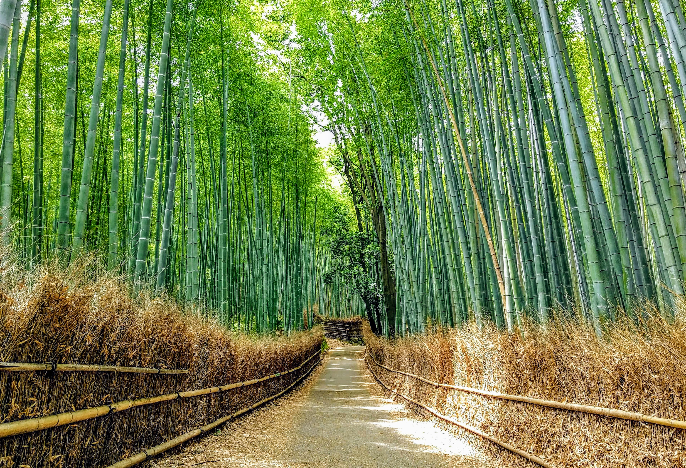
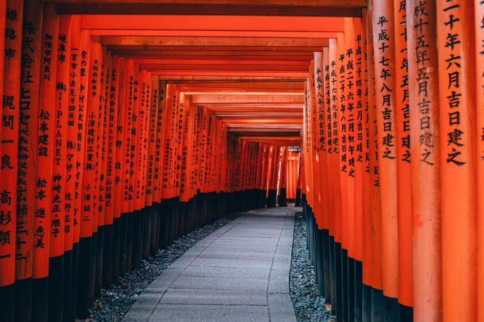
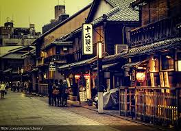
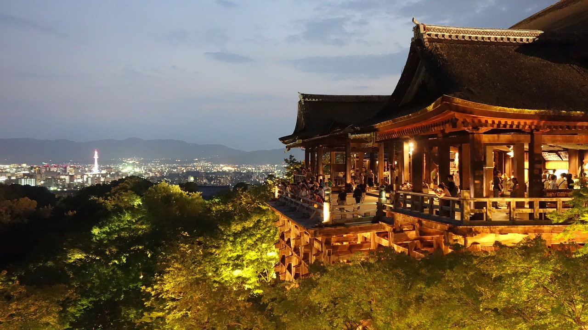
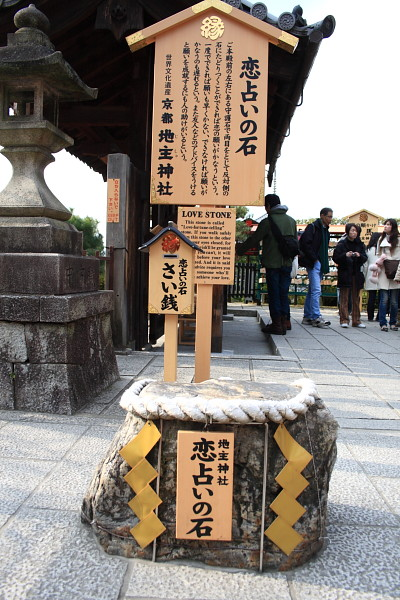

Kyoto is a living museum of Japan's past, where centuries-old temples, serene gardens, and geisha-lined streets tell stories of a rich cultural heritage.
So of course, your first stop in Kyoto should be Kinkakuji, the Golden Temple.  It was orginally built a retirement villa in 1397 for the shogun Ashikaga Yoshimitsu, but was later converted into a Zen Buddhist temple after his death.
Another popular temple to ago to it Ginkakuji, the Silver Temple. Which in fact is not silver but you'll have to do your own research as to why.  *SIDE NOTE: Kinkakuji and Ginkakuji are not next to each other...like at all.
For the nature lovers, you should check out Arashiyam Bamboo Forest.  And for the peole that love to hike check out Fushimi Inari Taisha.  It is famous for its one thousand red torii gates. If you hike the whole thing, expect to be up there for around 2 hours.
Kyoto is also home to the famoud Geisha-lined streets in Hanami-koji-dori in Gion.  So if you visit there, you might be lucky to see a one, but remember to always be kind!
Going to Kiyomizudera is another place to visit while in Kyoto.  Go to the base of the main hall and you will see Otowa Waterfall, where visitors can choose to drink from one of the divided streams that are believed to bring good fortune; a fruitful love life (left), success in studies/career (middle), and longevity and health(right). If you are looking for love go to the love stone.  Start on the opposite side of the stone and walk and touch the stone with your eye closed. If you are successful, you will not need any help finding love, other if you need help finding the stone...good luck.
Other things you might like are, visiting the Nishiki Market, where you can check out Kyoto's famous foods and goods, and going to Monkey Park Iwatayama, it is inhabited by over 120 Japanese macaque monkeys.
{% endblock %}